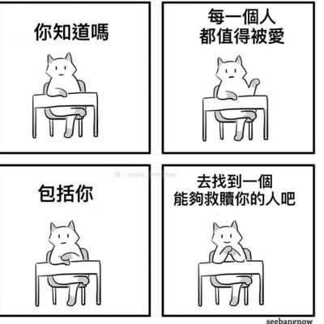

ジャンボ蜜柑
@JanboMikan
@Akkarineko @yuyuqing0725 很好科普！

幽靈貓貓
@Akkarineko
@JanboMikan @yuyuqing0725 多吃膳食纤维多喝水保证大便通畅，忌油腻辛辣防止便秘或火烧屁股复发痔疮。
手术其实也没什么，钱包-4K（有医保），屁股拉玻璃不至于（看地方手术技术和护理），但肯定要疼一个月的，术后半年差不多就恢复的可以玩了（开发进度半年回到解放前